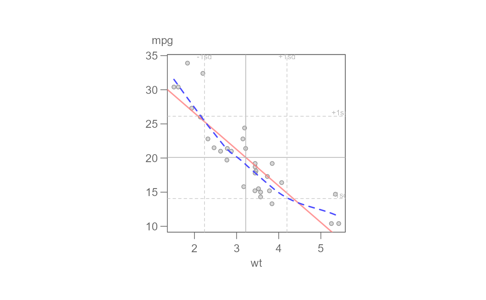
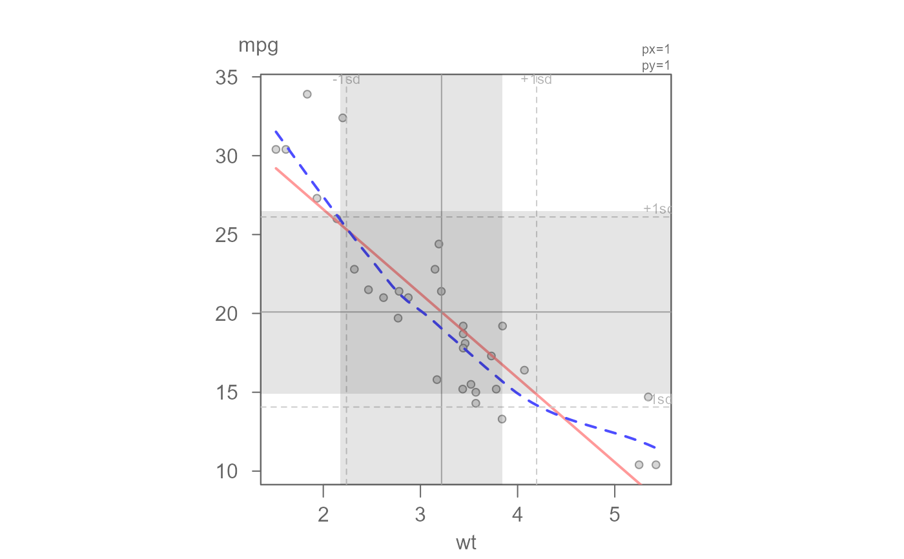

eda_lm generates a scatter plot with a fitted regression line.
A loess line can also be added to the plot
for model comparison. The axes are scaled such that their respective
standard deviations match axes unit length.
eda_lm( dat, x, y, x.lab = NULL, y.lab = NULL, reg = TRUE, loe = FALSE, lm.col = rgb(1, 0.5, 0.5, 0.8), loe.col = rgb(0.73, 0.73, 1, 1), stats = FALSE, plot.d = list(pch = 20, col = "grey40"), ..., loess.d = NULL )
| dat | data frame |
|---|---|
| x | column name assigned the x axis |
| y | column name assigned the y axis |
| x.lab | X label for output plot |
| y.lab | Y label for output plot |
| reg | boolean indicating whether a least squares regression line should be plotted |
| loe | boolean indicating if a loess curve should be fitted |
| lm.col | regression line color |
| loe.col | LOESS curve color |
| stats | boolean indicating if regression summary statistics should be displayed |
| plot.d | Additional parameters passed to the plot function |
| ... | not used |
| loess.d | Additional parameters passed to the loess.smooth function |
plot and loess.smooth functions
eda_lm(mtcars, wt, mpg, plot.d = list(pch=16, col="black"), loe=TRUE, loess.d=list(family = "symmetric", span=0.5, degree=2))